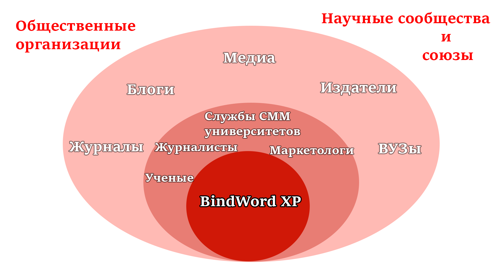

О проекте
BindWord XP
Описание:
Bind Word XP - это приложение с графическим пользовательским
интерфейсом для статистического/количественного и
семантического анализа больших массивов текстовых
данных с применением технологий искусственного
интеллекта и открытым исходным кодом.
Проект разрабатывается в рамках дисциплины "Проектная деятельность" Московского Политехнического университета.
Куратор проекта: Самелик Юрий Леонидович.
Цель:
Разработать и выпустить многоплатформенное десктопное приложение с графическим интерфейсом для NLP-анализа текстовых данных, основанное на существующем Python/Spacy скрипте, и возможностью обработки текста.
Задачи:
- Разработка графического интерфейса на базе фреймворка PyQt
- Интеграция Python/Spacy скрипта в десктопное приложение
- Обеспечение кроссплатформенной совместимости (Windows, macOS, Linux)
- Создание системы управления проектами на базе Trello
- Организация процесса непрерывной интеграции и непрерывного развертывания (CI/CD)
- Проведение нагрузочного тестирования и оптимизация производительности
- Подготовка документации для пользователей и разработчиков
- Публикация приложения и результатов проекта в открытом доступе
Актуальность:
- Отсутствие понятных и бесплатных программ для быстрого анализа и обработки текста
- Оффлайн-решение
- Открытый исходный код
Карта Стейкхолдеров
Структура работы в проекте
Руководство проекта
Главный координатор
Дизайн
Разработка шаблона интерфейса
Подбор стиля и удобного UI
Функционал
Анализ текста (частотность, ключевые темы)
Распознавание именованных сущностей
Проверка орфографии и работа с внешними NLP-моделями
Интерфейс
Создание интерфейса для работы с анализом текста
Интерактивные элементы и отображение результатов
Документация
Описание функционала
Инструкции по использованию
Описание целевой аудитории:
Основные сегменты ЦА
| Сегмент | Потребности |
|---|---|
| Студенты и исследователи | Простой интерфейс для быстрого анализа текстов, документация и примеры. |
| Журналисты и писатели | Простой интерфейс для анализа текста (эмоциональная окраска, частота слов). |
| Преподаватели и образовательные учреждения | Упрощённый функционал для обучения NLP. |
| Малые и средние бизнесы | Анализ ключевых слов, экспорт результатов. |
Характеристики ЦА
| Возраст | Уровень знаний | География |
|---|---|---|
| Основная аудитория — молодёжь (18-35 лет), но также и специалисты среднего возраста. | Разные уровни — от начинающих до опытных пользователей. | Приложение востребовано как в развитых, так и в развивающихся странах, особенно для работы воффлайн-режиме. |
Потребности ЦА
| Простота и доступность | Гибкость | Результативность |
|---|---|---|
| Удобный интерфейс и работа без интернета. | Настройки анализа и фильтры для различных задач. | Быстрое и точное выполнение анализа с возможностью экспорта данных. |